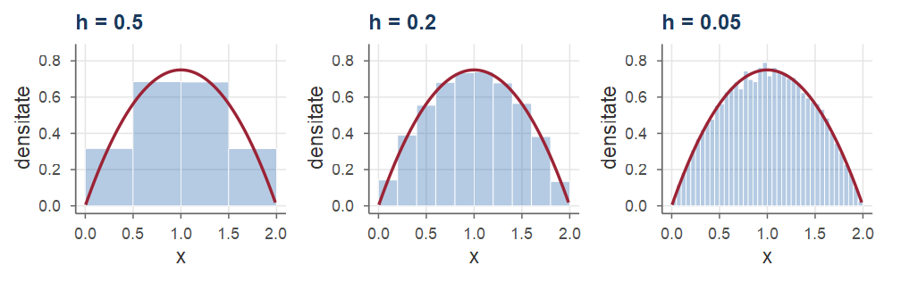
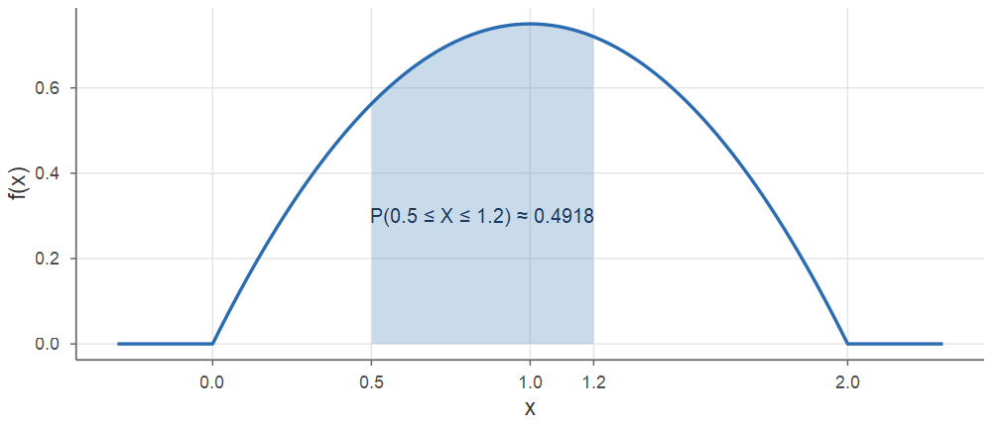
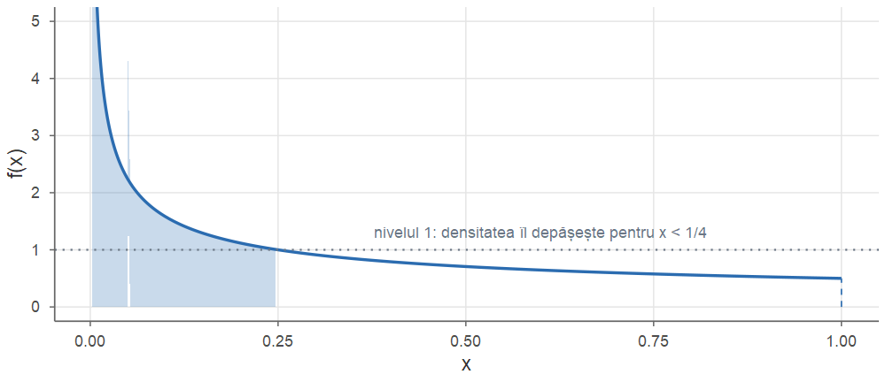
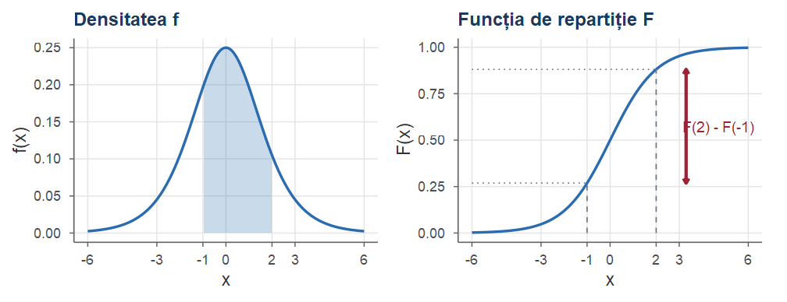
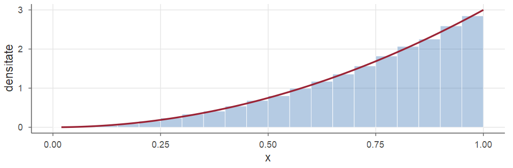
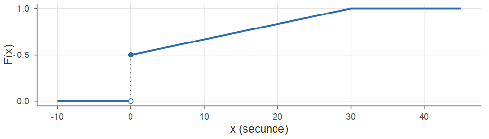
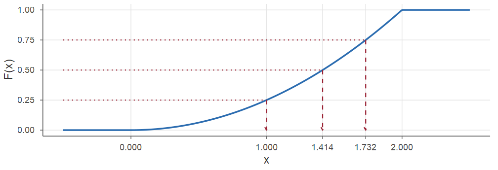
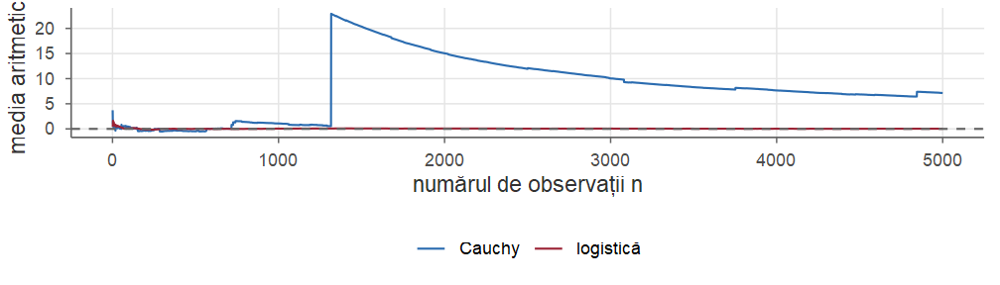
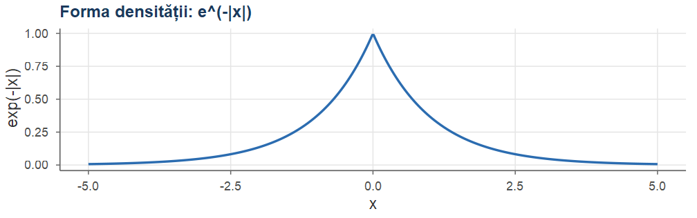

Cursul 4. Variabile aleatoare continue
Probabilități și Statistică · Cursul 4
Alexandru Amărioarei
Universitatea din București · Facultatea de Matematică și Informatică · 2026–2027
Planul cursului
| Partea | Conținut |
|---|---|
| I | De la discret la continuu; densitatea de repartiție |
| II | Funcția de repartiție; cuantile și mediană; analogia discret–continuu |
| III | Media, formula de transfer, momente, varianța |
| IV | Exerciții rezolvate |
Obiective: lucrul cu densitatea \(f\) și funcția de repartiție \(F\) (\(F'=f\)); calculul cuantilelor; calculul mediei, momentelor și varianței prin integrale.
Recapitulare: variabile aleatoare discrete
Din Cursul 3
- Funcția de repartiție \(F(x)=\PP(X\le x)\): crescătoare, continuă la dreapta, \(F(-\infty)=0\), \(F(+\infty)=1\) (Teorema 5 din Cursul 3).
- \(\PP(x<X\le y)=F(y)-F(x)\), \(\PP(X=x)=F(x)-F(x-)\) (Propoziția 6 din Cursul 3).
- V.a. discretă: \(\PP(X\in A)=\sum_{x\in A}p_X(x)\), \(p_X\ge0\), \(\sum_x p_X(x)=1\).
- Media \(\E[X]=\sum_x x\,p_X(x)\) (dacă \(\sum_x|x|p_X(x)<\infty\)); formula de transfer \(\E[g(X)]=\sum_x g(x)p_X(x)\).
- \(\Var(X)=\E[(X-\E X)^2]=\E[X^2]-(\E X)^2\), \(\Var(aX+b)=a^2\Var(X)\); liniaritatea mediei.
Partea I — Densitatea de repartiție
Motivație: mărimi care iau orice valoare
Multe mărimi de interes practic pot lua, cel puțin în principiu, orice valoare dintr-un interval:
- durata unei convorbiri telefonice;
- timpul de funcționare al unui server până la prima defecțiune;
- înălțimea unei persoane alese la întâmplare;
- eroarea de măsurare a unui instrument;
- poziția unui punct ales la întâmplare pe un segment.
Pentru astfel de variabile, probabilitatea de a lua o valoare fixată este nulă, iar descrierea prin funcția de masă nu mai are sens.
Ideea cursului: înlocuim funcția de masă cu densitatea de repartiție, iar sumele cu integrale.
De la discret la continuu
Alegem un punct „la întâmplare” în \([0,1]\); fie \(X\) poziția lui. Este natural să cerem ca probabilitatea ca \(X\) să cadă într-un subinterval să fie egală cu lungimea acestuia: \[ \PP(X\in[0,1/2])=1/2,\qquad \PP(X\in[0.2,0.3])=0.1 . \] Atunci, pentru orice \(x\in[0,1]\) și orice \(\varepsilon>0\), \[ 0\le \PP(X=x)\le \PP\big(X\in[x-\varepsilon,x+\varepsilon]\big)\le 2\varepsilon, \] deci \(\PP(X=x)=0\): fiecare valoare individuală are probabilitate zero, deși \(X\) ia cu siguranță o valoare din \([0,1]\).
Nu există nicio contradicție: aditivitatea numărabilă se aplică doar reuniunilor numărabile, iar \([0,1]\) nu este numărabil.
Histograme și densitate
Simulăm multe valori ale lui \(X\) și le grupăm în clase de lățime \(h\); înălțimea fiecărei bare (aria totală normalizată la \(1\)) aproximează \(\PP(X\in[x,x+h])/h\).
Când numărul de observații crește și \(h\) scade, histograma se stabilizează în jurul unei curbe netede — densitatea de repartiție (aici \(f(x)=\frac38(4x-2x^2)\) pe \((0,2)\), curba roșie).
Variabilă aleatoare continuă. Densitate
Definiția 1 (Variabilă aleatoare continuă)
Fie \((\Omega,\F,\PP)\) un câmp de probabilitate și \(X:\Omega\to\R\) o variabilă aleatoare. \(X\) este o variabilă aleatoare continuă (mai precis, absolut continuă) dacă există o funcție \(f:\R\to[0,\infty)\), integrabilă, cu \[ \PP(X\in A)=\int_A f(x)\dd x \] pentru orice \(A\subseteq\R\) care este un interval sau o reuniune cel mult numărabilă de intervale. Funcția \(f\) se numește densitatea de repartiție (densitatea de probabilitate) a lui \(X\); se notează \(f_X\) când trebuie precizată variabila.
Interpretare geometrică: probabilitatea ca \(X\) să ia valori în \(A\) este aria de sub graficul densității, deasupra lui \(A\). În particular, \[ \PP(a\le X\le b)=\int_a^b f(x)\dd x . \]
Probabilitatea ca arie

\(\PP(a\le X\le b)\) este aria de sub graficul densității între \(a\) și \(b\). Aici \(f(x)=\frac{3}{8}(4x-2x^2)\) pe \((0,2)\), \(a=0.5\), \(b=1.2\), iar aria hașurată este \(\approx 0.4918\).
Proprietățile densității
Luând \(A=\R\): \(\PP(X\in\R)=\PP(\Omega)=1\) — aria totală de sub graficul densității este \(1\).
Propoziția 2 (Proprietățile densității)
Densitatea de repartiție \(f\) a unei variabile aleatoare continue satisface:
\(f(x)\ge 0\) pentru orice \(x\in\R\);
\(\displaystyle\int_{-\infty}^{+\infty} f(x)\dd x=1\).
Reciproc, orice funcție integrabilă \(f:\R\to\R\) care verifică a) și b) este densitatea unei variabile aleatoare continue.
Partea reciprocă (existența unei v.a. cu densitate dată) necesită teoria măsurii și o admitem; ea ne permite să vorbim despre „variabila aleatoare cu densitatea \(f\)” de îndată ce am verificat a) și b). În cursul următor vom vedea o metodă constructivă, pornind de la o variabilă uniformă.
Suportul unei densități
Observație
Mulțimea \(\{x\in\R : f(x)>0\}\) se numește suportul lui \(X\) (sau al densității). În practică, densitățile se dau printr-o formulă pe suport și valoarea \(0\) în rest; scriem de exemplu \[ f(x)=2x\,\Ind_{[0,1]}(x), \] unde \(\Ind_A\) este funcția indicatoare a mulțimii \(A\).
Suportul poate fi un interval mărginit, o semidreaptă sau tot \(\R\) (de exemplu, repartiția logistică, mai târziu).
Exemplu: densitatea \(2x\) pe \([0,1]\)
Exemplu (Verificarea unei densități)
\(f(x)=2x\,\Ind_{[0,1]}(x)\) este densitate: \(f\ge0\) și \(\int_{\R}f=\int_0^1 2x\dd x=x^2\big|_0^1=1\). Atunci \[ \PP\Big(X\le\tfrac12\Big)=\int_0^{1/2}2x\dd x=\frac14,\qquad \PP\Big(\tfrac12<X\le1\Big)=\frac34 . \]
Exemplu: un punct ales la întâmplare în \([0,1]\)
Exemplu (Punct ales uniform în intervalul unitate)
Revenim la motivație: \(X\) = poziția unui punct ales la întâmplare în \([0,1]\). Densitatea \(f(x)=\Ind_{[0,1]}(x)\) (\(=1\) pe \([0,1]\), \(0\) în rest) verifică \(f\ge0\), \(\int_{\R}f=1\) și, pentru \(0\le a\le b\le1\), \[ \PP(a\le X\le b)=\int_a^b 1\dd x=b-a \quad(\text{lungimea intervalului}). \] În particular \(\PP(X\in[0.2,0.3])=0.1\) și \(\PP(X=x)=0\) pentru orice \(x\), exact ca în motivație.
Probabilitatea unui punct
Propoziția 3 (Punctele au probabilitate zero)
Dacă \(X\) este o variabilă aleatoare continuă cu densitatea \(f\), atunci pentru orice \(a\in\R\) \[ \PP(X=a)=\int_a^a f(x)\dd x=0 . \] În consecință, pentru orice \(a<b\), \[ \PP(a\le X\le b)=\PP(a<X\le b)=\PP(a\le X<b)=\PP(a<X<b)=\int_a^b f(x)\dd x . \]
Punctele au probabilitate zero — demonstrație
Demonstrație. Prima afirmație rezultă direct din definiție, cu \(A=\{a\}=[a,a]\). Pentru a doua, de exemplu, \(\{a\le X\le b\}=\{X=a\}\cup\{a<X\le b\}\), reuniune disjunctă, deci \(\PP(a\le X\le b)=0+\PP(a<X\le b)\); celelalte egalități se obțin la fel.■
Atenție!
Pentru variabile discrete, egalitățile de mai sus sunt în general false: dacă \(X\sim\Bin(3,1/2)\), atunci \(\PP(1\le X\le 2)=3/4\), dar \(\PP(1<X<2)=0\). Nu transferați automat regula „inegalitățile stricte sau nestricte nu contează” de la variabile continue la variabile discrete.
Pentru o variabilă continuă, în schimb, putem scrie liniștiți \(\PP(X<x)=\PP(X\le x)\).
De ce se numește „densitate”?
Fie \(x\in\R\) și \(\dd x>0\) o lungime foarte mică. Dacă \(f\) este continuă în \(x\), pe \([x,x+\dd x]\) densitatea este aproape constantă, egală cu \(f(x)\), și \[ \PP\big(X\in[x,x+\dd x]\big)=\int_x^{x+\dd x} f(t)\dd t\approx f(x)\,\big((x+\dd x)-x\big)=f(x)\dd x . \] Astfel \[ f(x)\approx\frac{\PP\big(X\in[x,x+\dd x]\big)}{\dd x}=\frac{\text{probabilitate}}{\text{unitate de lungime}} . \]
- Ca în fizică (densitatea de masă = masă pe unitatea de volum), densitatea de repartiție măsoară probabilitatea pe unitatea de lungime în jurul lui \(x\).
- Dacă \(X\) se măsoară în metri, \(f\) se măsoară în \(1/\text{m}\).
Densitatea nu este o probabilitate
Atenție!
Valoarea \(f(x)\) a unei densități nu este o probabilitate. Singurele constrângeri sunt \(f\ge0\) și aria totală egală cu \(1\); o densitate poate lua valori mai mari decât \(1\) și poate fi chiar nemărginită. Probabilități sunt doar ariile de sub graficul lui \(f\).
Exemplul 1 (O densitate nemărginită)
Fie \(X\) cu densitatea \(f(x)=\dfrac{1}{2\sqrt{x}}\) pentru \(0<x\le 1\) și \(f(x)=0\) altfel. Evident \(f(x)\ge0\) și \(\int_{-\infty}^{+\infty} f(x)\dd x=\int_0^1\frac{1}{2\sqrt{x}}\dd x=\sqrt{x}\,\big|_0^1=1\). Totuși \(f(x)\to+\infty\) când \(x\to0^+\). Aceasta nu contrazice nimic: de exemplu, \(\PP(X\le 0.01)=\sqrt{0.01}=0.1\), o probabilitate perfect rezonabilă.
O densitate nemărginită — grafic

Aria hașurată este \(\PP(X\le 0.25)=\sqrt{0.25}=0.5\): jumătate din masa de probabilitate este concentrată pe intervalul \((0,0.25]\), unde densitatea depășește \(1\).
Determinarea unei constante de normare
Frecvent, o densitate este cunoscută „până la o constantă”: se știe forma funcției, iar constanta se determină din condiția ca aria totală să fie \(1\).
Exemplul 2 (Determinarea constantei)
Durata (în ore) a funcționării neîntrerupte a unui echipament este o v.a. continuă \(X\) cu densitatea \[ f(x)=\begin{cases}k\,(4x-2x^2), & 0<x<2,\\ 0, & \text{altfel.}\end{cases} \] a) Determinăm \(k\). Pe \((0,2)\), \(4x-2x^2=2x(2-x)>0\), deci \(f\ge0\) impune \(k\ge0\). Din normare, \[ 1=\int_0^2 k(4x-2x^2)\dd x=k\Big(2x^2-\frac{2x^3}{3}\Big)\Big|_0^2=k\Big(8-\frac{16}{3}\Big)=\frac{8k}{3} \quad\Longrightarrow\quad k=\frac38 . \]
Determinarea constantei — continuare
Exemplu (Determinarea constantei (continuare))
- Probabilitatea ca echipamentul să funcționeze mai mult de o oră este \[ \PP(X>1)=\int_1^2\frac38(4x-2x^2)\dd x=\frac38\Big(2x^2-\frac{2x^3}{3}\Big)\Big|_1^2=\frac38\Big(\frac83-\frac43\Big)=\frac12 . \] Rezultatul era de așteptat: graficul densității este o parabolă simetrică față de \(x=1\).
Exemplu: o densitate pe \([0,\infty)\)
Exemplu (Constanta unei densități exponențiale)
Timpul (în ore) până la defectarea unei componente are densitatea \(f(x)=c\,e^{-2x}\) pentru \(x\ge0\) și \(f(x)=0\) pentru \(x<0\).
Normare: \(1=c\int_0^\infty e^{-2x}\dd x=c\Big(-\frac{e^{-2x}}{2}\Big)\Big|_0^\infty=\frac c2\), deci \(c=2\).
\(\PP(X>1)=\int_1^\infty 2e^{-2x}\dd x=e^{-2}\approx0.1353\) și \(\PP(X\le 0.5)=1-e^{-1}\approx0.6321\).
Pentru \(0\le a<b\): \(\PP(a<X\le b)=e^{-2a}-e^{-2b}\).
Partea II — Funcția de repartiție. Cuantile
Funcția de repartiție
Funcția de repartiție se definește în același mod pentru orice variabilă aleatoare — discretă, continuă sau de alt tip.
Definiția 4 (Funcția de repartiție)
Fie \(X\) o variabilă aleatoare. Funcția \(F=F_X:\R\to[0,1]\), \[ F(x)=\PP(X\le x)=\PP\big(X\in(-\infty,x]\big),\qquad x\in\R, \] se numește funcția de repartiție a lui \(X\).
Din definiție, pentru orice \(a<b\): \[ \PP(a<X\le b)=F(b)-F(a),\qquad \PP(X>x)=1-F(x). \] Funcția \(x\mapsto\PP(X>x)=1-F(x)\) se numește funcția de supraviețuire (de fiabilitate); apare natural când \(X\) este o durată de viață.
Proprietățile funcției de repartiție
Teorema 5 (Proprietățile funcției de repartiție)
Funcția de repartiție \(F\) a unei variabile aleatoare \(X\) are proprietățile:
- \(F\) este crescătoare: dacă \(x_1\le x_2\), atunci \(F(x_1)\le F(x_2)\);
- \(F\) este continuă la dreapta: \(\lim_{h\downarrow0}F(x+h)=F(x)\) pentru orice \(x\in\R\);
- \(\lim_{x\to-\infty}F(x)=0\) și \(\lim_{x\to+\infty}F(x)=1\).
Reciproc, orice funcție cu proprietățile a)–c) este funcția de repartiție a unei variabile aleatoare.
Proprietățile funcției de repartiție — demonstrație
Demonstrație.
Dacă \(x_1\le x_2\), atunci \(\{X\le x_1\}\subseteq\{X\le x_2\}\) și, din monotonia probabilității, \(F(x_1)\le F(x_2)\).
Fie \(h_n\downarrow0\). Evenimentele \(\{X\le x+h_n\}\) formează un șir descrescător cu intersecția \(\{X\le x\}\); din continuitatea probabilității pe șiruri monotone, \(F(x+h_n)\to F(x)\). Cum \(F\) este monotonă, rezultă limita la dreapta.
Evenimentele \(\{X\le -n\}\) descresc către \(\emptyset\), iar \(\{X\le n\}\) cresc către \(\Omega\); prin continuitatea probabilității, \(F(-n)\to0\) și \(F(n)\to1\), iar monotonia lui \(F\) permite trecerea de la șiruri la limite. Partea reciprocă o admitem.
■
Legătura dintre densitate și funcția de repartiție
Discret: \(F(x)=\sum_{y\le x}p_X(y)\), cu salturi în valorile lui \(X\). Continuu: suma devine integrală.
Teorema 6 (Relația dintre F și f)
Fie \(X\) o variabilă aleatoare continuă cu densitatea \(f\) și funcția de repartiție \(F\). Atunci:
\(\displaystyle F(x)=\int_{-\infty}^x f(t)\dd t\) pentru orice \(x\in\R\);
\(F\) este continuă pe \(\R\);
dacă \(f\) este continuă în \(x_0\), atunci \(F\) este derivabilă în \(x_0\) și \(F'(x_0)=f(x_0)\). În particular, dacă \(f\) este continuă pe un interval, atunci \(F'=f\) pe acel interval.
Relația dintre \(F\) și \(f\) — demonstrație
Demonstrație.
- rezultă din definiția densității cu \(A=(-\infty,x]\). b) Din Propoziția 3: \(F(x)-F(x^-)=\PP(X=x)=0\), deci \(F\) nu are salturi; fiind continuă la dreapta și fără salturi, \(F\) este continuă. c) este teorema fundamentală a analizei pentru \(x\mapsto\int_{-\infty}^x f(t)\dd t\).
■
Ilustrare. Pentru densitatea nemărginită \(f(x)=\frac{1}{2\sqrt x}\) pe \((0,1]\): \(F(x)=\int_0^x\frac{\dd t}{2\sqrt t}=\sqrt x\) pentru \(x\in[0,1]\), \(F\) este continuă pe \(\R\), iar \(F'(x)=\frac{1}{2\sqrt x}=f(x)\) pe \((0,1)\); în \(0\), unde \(f\) nu este continuă (nici măcar mărginită), \(F\) nu este derivabilă.
Densitatea și funcția de repartiție: aceeași informație
Densitatea și funcția de repartiție conțin aceeași informație: \[ \boxed{\ \text{cunoaștem } f \ \Longrightarrow\ F(x)=\int_{-\infty}^x f(t)\dd t, \qquad \text{cunoaștem } F \ \Longrightarrow\ f(x)=F'(x).\ } \]
- În punctele (cel mult numărabile, în exemplele noastre) în care \(F\) nu este derivabilă, valoarea lui \(f\) poate fi aleasă arbitrar.
- Modificarea unei densități într-un număr finit de puncte nu schimbă nicio integrală, deci nu schimbă repartiția.
- Pentru o v.a. continuă: \(\PP(a<X<b)=F(b)-F(a)\), indiferent de tipul inegalităților.
Exemplu. Pentru \(f(x)=2x\,\Ind_{[0,1]}(x)\): \(F(x)=0\) pentru \(x<0\), \(F(x)=x^2\) pentru \(0\le x\le1\), \(F(x)=1\) pentru \(x>1\); invers, \(F'(x)=2x\) pe \((0,1)\).
Exemplu: repartiția logistică
Exemplul 3 (Repartiția logistică)
Fie \(X\) cu densitatea \(f(x)=\dfrac{e^x}{(1+e^x)^2}\), \(x\in\R\). Calculăm a) funcția de repartiție \(F\) și b) \(\PP(a<X<b)\) pentru \(a=-1\), \(b=2\).
- Cu schimbarea de variabilă \(u=e^t\), \(\dd u=e^t\dd t\) (când \(t\to-\infty\), \(u\to0\)), \[ F(x)=\int_{-\infty}^x\frac{e^t}{(1+e^t)^2}\dd t=\int_0^{e^x}\frac{\dd u}{(1+u)^2}=\Big(-\frac{1}{1+u}\Big)\Big|_0^{e^x}=1-\frac{1}{1+e^x}=\frac{e^x}{1+e^x}. \] \(F(x)\to0\) când \(x\to-\infty\) și \(F(x)\to1\) când \(x\to+\infty\); în particular \(\int_{\R} f=1\), deci \(f\) este într-adevăr o densitate.
Repartiția logistică — continuare
Exemplu (Repartiția logistică (continuare))
- Folosind \(\PP(a<X\le b)=F(b)-F(a)\) și Propoziția 3, \[ \PP(-1<X<2)=F(2)-F(-1)=\frac{e^2}{1+e^2}-\frac{e^{-1}}{1+e^{-1}}\approx 0.8808-0.2689=0.6119 . \] Același rezultat se obține integrând direct densitatea, cu \(u=1+e^x\): \(\int_{-1}^2 f(x)\dd x=\int_{1+e^{-1}}^{1+e^2}u^{-2}\dd u\).
Repartiția logistică — densitate și funcție de repartiție

Aceeași probabilitate \(\PP(-1<X<2)\): aria de sub densitate (stânga), respectiv diferența de „înălțimi” \(F(2)-F(-1)\) (dreapta).
De la funcția de repartiție la densitate
Exemplul 4 (De la funcția de repartiție la densitate)
Fie \(X\) cu funcția de repartiție \(F(x)=0\) pentru \(x<0\), \(F(x)=x^3\) pentru \(0\le x\le 1\), \(F(x)=1\) pentru \(x>1\).
\(F\) este continuă, crescătoare, cu limitele \(0\) și \(1\), iar în afara punctelor \(0\) și \(1\) este derivabilă. Prin derivare, \[ f(x)=F'(x)=\begin{cases}3x^2, & 0<x<1,\\ 0, & x<0 \text{ sau } x>1,\end{cases} \] iar în \(0\) și \(1\) putem pune orice valoare (de exemplu \(f(0)=0\), \(f(1)=3\)). De exemplu, \(\PP(X>1/2)=1-F(1/2)=7/8\).
Interpretare: alegem independent trei puncte la întâmplare în \([0,1]\); cel mai mare dintre ele, \(M\), verifică \[ \PP(M\le x)=\PP(\text{toate trei}\le x)=x\cdot x\cdot x=x^3,\qquad x\in[0,1]. \]
Maximul a trei puncte aleatoare: simulare
#> simulare exact
#> 0.874 0.875
Histograma valorilor simulate ale lui \(M\) urmează densitatea \(f(x)=3x^2\) (roșu).
Variabile nici discrete, nici continue
Nu orice variabilă aleatoare este discretă sau continuă; funcția de repartiție rămâne însă bine definită și permite calculul oricărei probabilități.
Exemplul 5 (Așteptarea la semafor)
Un pieton ajunge la un semafor la un moment aleator. Cu probabilitatea \(1/2\) semaforul este verde și timpul de așteptare este \(X=0\); altfel, pietonul așteaptă un timp (în secunde) cu densitatea constantă \(1/30\) pe \((0,30)\). Pentru \(0\le x<30\), \[ F(x)=\PP(X\le x)=\PP(X=0)+\PP(0<X\le x)=\frac12+\frac12\cdot\frac{x}{30}=\frac12+\frac{x}{60}, \] iar \(F(x)=0\) pentru \(x<0\) și \(F(x)=1\) pentru \(x\ge30\). \(F\) are un salt de mărime \(1/2\) în \(0\) (deci \(X\) nu este continuă), dar este continuă și strict crescătoare pe \([0,30]\) (deci \(X\) nu este nici discretă). \(\PP(X>20)=1-F(20)=1/2-1/3=1/6\).
Așteptarea la semafor — funcția de repartiție

Saltul de mărime \(1/2\) din origine: probabilitatea de a găsi semaforul verde; pe \([0,30]\), \(F\) crește liniar.
Cuantile și mediană
Funcția de repartiție răspunde la „care este probabilitatea ca \(X\) să nu depășească pragul \(x\)?”. Întrebarea inversă: „care este pragul pe care \(X\) nu îl depășește cu o probabilitate dată \(\alpha\)?” (durata atinsă de \(90\%\) dintre echipamente, valoarea „de mijloc” etc.).
Definiția 7 (Cuantilă, mediană, cuartile)
Fie \(X\) o variabilă aleatoare cu funcția de repartiție \(F\) și \(\alpha\in(0,1)\). Numărul \[ x_\alpha=F^{-1}(\alpha)=\inf\{x\in\R : F(x)\ge\alpha\} \] se numește cuantila de ordin \(\alpha\) a lui \(X\). Funcția \(\alpha\mapsto F^{-1}(\alpha)\) se numește funcția cuantilă (inversa generalizată a lui \(F\)). Cuantila de ordin \(1/2\) se numește mediană, iar cuantilele de ordin \(1/4\) și \(3/4\) se numesc prima, respectiv a treia cuartilă.
Cuantile: interpretare
Dacă \(F\) este continuă și strict crescătoare pe suport (situația tipică pentru variabile continue), \(x_\alpha\) este unica soluție a ecuației \(F(x)=\alpha\): \[ \PP(X\le x_\alpha)=\alpha,\qquad \PP(X>x_\alpha)=1-\alpha . \]
- Geometric: \(x_\alpha\) este abscisa în care graficul lui \(F\) atinge nivelul \(\alpha\).
- În termeni de densitate: \(x_\alpha\) împarte aria de sub grafic în două părți, de arii \(\alpha\) și \(1-\alpha\).
- Definiția prin infimum funcționează și pentru variabile discrete, unde ecuația \(F(x)=\alpha\) poate să nu aibă soluții sau să aibă o infinitate.
În R, funcțiile cu prefixul q calculează cuantile: qlogis, qbinom, qpois, …
Exemplu: cuantilele unei densități liniare
Exemplul 6 (Cuantilele unei densități liniare)
Fie \(X\) cu densitatea \(f(x)=x/2\) pentru \(0\le x\le2\) și \(0\) altfel. Pentru \(x\in[0,2]\), \[ F(x)=\int_0^x \frac t2\dd t=\frac{x^2}{4}. \] Ecuația \(x^2/4=\alpha\) are pe \([0,2]\) soluția \(x_\alpha=2\sqrt{\alpha}\). Prin urmare:
- mediana este \(x_{1/2}=\sqrt2\approx1.414\);
- cuartilele sunt \(x_{1/4}=1\) și \(x_{3/4}=\sqrt3\approx1.732\).
Mediana nu este mijlocul suportului: densitatea „împinge” masa de probabilitate spre dreapta.
Pentru repartiția logistică, \(e^x/(1+e^x)=\alpha\) are soluția \(x_\alpha=\ln\frac{\alpha}{1-\alpha}\); mediana este \(0\), iar cuartilele \(\pm\ln3\approx\pm1.0986\).
Cuantilele citite pe graficul lui \(F\)

Pentru \(f(x)=x/2\) pe \([0,2]\): pornim de la nivelurile \(0.25\), \(0.5\), \(0.75\) pe axa verticală și citim cuantilele \(1\), \(\sqrt2\), \(\sqrt3\).
Cuantilele unei variabile discrete
Exemplu (Cuantile pentru o variabilă discretă)
Fie \(X\sim\Bin(3,1/2)\), cu \(F(0)=\frac18\), \(F(1)=\frac12\), \(F(2)=\frac78\), \(F(3)=1\) (în scară).
- \(\alpha=\frac12\): \(\{x: F(x)\ge\frac12\}=[1,\infty)\), deci mediana este \(x_{1/2}=1\), deși ecuația \(F(x)=\frac12\) are o infinitate de soluții (tot intervalul \([1,2)\)).
- \(\alpha=0.7\): ecuația \(F(x)=0.7\) nu are soluții; \(\{x:F(x)\ge0.7\}=[2,\infty)\), deci \(x_{0.7}=2\).
Calculul numeric al cuantilelor
Când ecuația \(F(x)=\alpha\) nu se poate rezolva explicit, cuantilele se calculează numeric: integrate calculează integrale, iar uniroot caută o rădăcină a unei funcții pe un interval.
# densitatea f(x) = 3/8 (4x - 2x^2) pe (0, 2)
f <- function(x) 3/8 * (4*x - 2*x^2)
F <- function(x) integrate(f, 0, x)$value # funcția de repartiție
integrate(f, 0, 2)$value # aria totală = 1
#> [1] 1
F(1.2) - F(0.5) # P(0.5 <= X <= 1.2)
#> [1] 0.4918
uniroot(function(x) F(x) - 0.9, c(0, 2))$root # cuantila 0.9
#> [1] 1.608Analogia discret–continuu
| V.a. discretă | V.a. continuă | |
|---|---|---|
| valori individuale | \(\PP(X=x)=p_X(x)\) | \(\PP(X=x)=0\); densitatea \(f(x)\) |
| condiții | \(p_X\ge0\), \(\sum_x p_X(x)=1\) | \(f\ge0\), \(\int_{-\infty}^{\infty}f(x)\dd x=1\) |
| \(\PP(X\in A)\) | \(\sum_{x\in A}p_X(x)\) | \(\int_A f(x)\dd x\) |
| funcția de repartiție | \(F(x)=\sum_{y\le x}p_X(y)\) (în scară) | \(F(x)=\int_{-\infty}^x f(t)\dd t\), \(F'=f\) |
| media | \(\E[X]=\sum_x x\,p_X(x)\) | \(\E[X]=\int x f(x)\dd x\) |
| media unei funcții | \(\E[g(X)]=\sum_x g(x)p_X(x)\) | \(\E[g(X)]=\int g(x)f(x)\dd x\) |
| momentul de ordin \(k\) | \(\E[X^k]=\sum_x x^k p_X(x)\) | \(\E[X^k]=\int x^k f(x)\dd x\) |
Partea III — Media, momente, varianța
Media: de la sume la integrale
Pentru o v.a. discretă, \(\E[X]=\sum_x x\,\PP(X=x)\), cu condiția \(\sum_x|x|\,\PP(X=x)<\infty\).
Aproximăm o variabilă continuă printr-una discretă care ia valoarea \(x_i\) cu probabilitatea \[ \PP\big(X\in[x_i,x_i+\Delta x]\big)\approx f(x_i)\,\Delta x . \] Media variabilei discrete este \(\sum_i x_i f(x_i)\Delta x\) — o sumă Riemann pentru integrala \(\int x f(x)\dd x\).
Definiția 8 (Media unei variabile aleatoare continue)
Fie \(X\) o variabilă aleatoare continuă cu densitatea \(f\). Dacă \(\E[|X|]=\int_{-\infty}^{+\infty}|x|f(x)\dd x<\infty\), media (speranța matematică) lui \(X\) este \[ \E[X]=\int_{-\infty}^{+\infty}x f(x)\dd x . \] În caz contrar, spunem că media lui \(X\) nu există.
Media ca centru de greutate
- Interpretare fizică: dacă o bară subțire are densitatea de masă \(f(x)\) în punctul \(x\) (masa totală \(1\)), punctul ei de echilibru este \(\int x f(x)\dd x\).
- Simetrie: dacă densitatea este simetrică față de \(c\), adică \(f(c+x)=f(c-x)\) pentru orice \(x\), și media există, atunci \(\E[X]=c\).
Exemplul 7 (Calculul unor medii)
- Pentru densitatea \(\frac38(4x-2x^2)\) pe \((0,2)\) (Exemplul 2), graficul este simetric față de \(x=1\), deci \(\E[X]=1\). Verificare directă: \[ \E[X]=\int_0^2 x\cdot\frac38(4x-2x^2)\dd x=\frac38\Big(\frac{4x^3}{3}-\frac{x^4}{2}\Big)\Big|_0^2=\frac38\cdot\frac{8}{3}=1. \]
Calculul unor medii (continuare)
Exemplu (Calculul unor medii (continuare))
Pentru densitatea nemărginită (Exemplul 1): \(\E[X]=\int_0^1 x\cdot\frac{1}{2\sqrt x}\dd x=\frac12\int_0^1\sqrt x\dd x=\frac13\).
Pentru \(F(x)=x^3\) pe \([0,1]\) (Exemplul 4): \(\E[X]=\int_0^1 x\cdot3x^2\dd x=\frac34\) — maximul a trei puncte aleatoare din \([0,1]\) se află, în medie, la \(3/4\).
Media și mediana
Media și mediana sunt două măsuri diferite ale „centrului” unei repartiții; ele coincid pentru densitățile simetrice (dacă media există), dar pot diferi mult în rest.
Exemplu (Media și mediana pentru câteva densități)
- \(f(x)=x/2\) pe \([0,2]\): \(\E[X]=\int_0^2\frac{x^2}{2}\dd x=\frac43\approx1.333\), mediana \(\sqrt2\approx1.414\) (coada lungă este spre stânga: media \(<\) mediana).
- \(f(x)=\frac{1}{2\sqrt x}\) pe \((0,1]\): \(\E[X]=\frac13\), iar \(F(x)=\sqrt x\) dă mediana \(\frac14\) (coada lungă spre dreapta: media \(>\) mediana).
- \(f(x)=\frac38(4x-2x^2)\) pe \((0,2)\) și repartiția logistică: densități simetrice, media = mediana (\(1\), respectiv \(0\)).
- Repartiția Cauchy: mediana \(0\), media nu există.
O variabilă fără medie: repartiția Cauchy
Exemplul 8 (O variabilă fără medie: repartiția Cauchy)
\(f(x)=\dfrac{1}{\pi(1+x^2)}\), \(x\in\R\), este o densitate: \(f>0\) și \[ \int_{-\infty}^{\infty}\frac{\dd x}{\pi(1+x^2)}=\frac1\pi\arctan x\,\Big|_{-\infty}^{\infty}=\frac1\pi\Big(\frac\pi2+\frac\pi2\Big)=1. \] Variabila cu această densitate are repartiția Cauchy. Deși densitatea este simetrică față de \(0\), media nu există: \[ \int_{-\infty}^{\infty}\frac{|x|}{\pi(1+x^2)}\dd x=\frac{2}{\pi}\int_0^\infty\frac{x}{1+x^2}\dd x=\frac1\pi\ln(1+x^2)\Big|_0^\infty=+\infty . \] Cozile densității scad ca \(1/x^2\), prea încet pentru ca integrala lui \(|x|f(x)\) să fie finită.
Cauchy: media empirică nu se stabilizează

Media aritmetică a \(n\) valori simulate: pentru repartiția logistică (medie \(0\)) ea se stabilizează în jurul lui \(0\); pentru repartiția Cauchy face salturi mari, oricât de mare ar fi \(n\).
Atenție!
Nu concluzionați că \(\E[X]=0\) doar pentru că densitatea este simetrică față de \(0\): mai întâi trebuie verificat că \(\E[|X|]<\infty\).
Media prin funcția de supraviețuire
Propoziția 9 (Media prin funcția de supraviețuire)
Dacă \(X\ge0\) este o variabilă aleatoare continuă cu densitatea \(f\), atunci \[ \E[X]=\int_0^\infty \PP(X>x)\dd x=\int_0^\infty\big(1-F(x)\big)\dd x , \] în sensul că ambii membri sunt simultan finiți sau infiniți.
De exemplu, dacă \(\PP(X>x)=e^{-x}\) pentru \(x\ge0\), atunci \(\E[X]=\int_0^\infty e^{-x}\dd x=1\), fără a calcula densitatea și fără integrare prin părți.
Media prin funcția de supraviețuire — demonstrație
Demonstrație. Scriem \(\PP(X>x)=\int_x^\infty f(t)\dd t\) și schimbăm ordinea de integrare (integrandul este nenegativ; teorema lui Fubini–Tonelli). Domeniul de integrare este \(\{(x,t): 0\le x<t\}\), deci \[ \int_0^\infty\PP(X>x)\dd x=\int_0^\infty\!\!\int_x^\infty f(t)\dd t\dd x=\int_0^\infty f(t)\Big(\int_0^t\dd x\Big)\dd t=\int_0^\infty t f(t)\dd t=\E[X]. \]■

Media unei funcții de o variabilă aleatoare
Dacă \(X\) este continuă și \(g:\R\to\R\) (suficient de regulată), \(Y=g(X)\) este tot o v.a. Am putea determina întâi repartiția lui \(Y\) (cursul următor), dar acest ocol nu este necesar.
Teorema 10 (Media unei funcții de v.a.)
Fie \(X\) o variabilă aleatoare continuă cu densitatea \(f\) și \(g:\R\to\R\) o funcție pentru care \(\int_{-\infty}^\infty|g(x)|f(x)\dd x<\infty\). Atunci \[ \E[g(X)]=\int_{-\infty}^{+\infty}g(x)f(x)\dd x . \]
În engleză rezultatul este cunoscut (glumeț) ca Law of the Unconscious Statistician (LOTUS), deoarece este folosit adesea fără a remarca faptul că e nevoie de o demonstrație.
Media unei funcții de v.a. — demonstrație
Demonstrație. Cazul \(g\ge0\); cazul general se obține scriind \(g=g^+-g^-\), cu \(g^+=\max(g,0)\), \(g^-=\max(-g,0)\). Formula \(\E[Y]=\int_0^\infty\PP(Y>t)\dd t\) rămâne valabilă pentru orice variabilă nenegativă \(Y\) (admitem acest fapt), deci \[ \E[g(X)]=\int_0^\infty\PP\big(g(X)>t\big)\dd t=\int_0^\infty\int_{\{x:\,g(x)>t\}}f(x)\dd x\dd t . \] Schimbând ordinea de integrare, pentru \(x\) fixat variabila \(t\) parcurge intervalul \([0,g(x))\), deci \[ \E[g(X)]=\int_{-\infty}^{\infty}f(x)\Big(\int_0^{g(x)}\dd t\Big)\dd x=\int_{-\infty}^{\infty}g(x)f(x)\dd x . \]■
\(\E[g(X)]\) diferă în general de \(g(\E[X])\)
Atenție!
În general \(\E[g(X)]\ne g(\E[X])\). Pentru densitatea nemărginită (Exemplul 1), \(\E[X]=1/3\), deci \((\E[X])^2=1/9\), dar \(\E[X^2]=\int_0^1 x^2\frac{1}{2\sqrt x}\dd x=\frac12\int_0^1x^{3/2}\dd x=\frac15\). Egalitatea are loc pentru funcții afine, \(g(x)=ax+b\).
#> E_X2 patrat_E_X
#> 0.2000 0.1111Diferența \(\E[X^2]-(\E[X])^2=\frac15-\frac19=\frac4{45}\) este exact varianța (Partea III, mai jos): cele două coincid doar pentru variabile degenerate.
Momente, varianță, abatere standard
Media descrie doar „centrul” repartiției; împrăștierea, asimetria și alte trăsături ale formei sunt descrise de momente.
Definiția 11 (Momente, varianță, abatere standard)
Fie \(X\) o v.a. continuă cu densitatea \(f\), \(k\ge1\) natural și \(a\in\R\). Atunci când integralele sunt absolut convergente, definim:
momentul de ordin \(k\): \(\E[X^k]=\int_{-\infty}^{+\infty}x^k f(x)\dd x\);
momentul centrat în \(a\) de ordin \(k\): \(\E[(X-a)^k]=\int_{-\infty}^{+\infty}(x-a)^k f(x)\dd x\);
momentul centrat de ordin \(k\) (\(a=\E[X]\)): \(\E\big[(X-\E[X])^k\big]=\int_{-\infty}^{+\infty}(x-\E[X])^k f(x)\dd x\).
Momentul centrat de ordin \(2\) este varianța lui \(X\), \(\Var(X)=\E\big[(X-\E[X])^2\big]=\int_{-\infty}^{+\infty}(x-\E[X])^2 f(x)\dd x\), iar \(\sigma_X=\sqrt{\Var(X)}\) este abaterea standard a lui \(X\).
Formula de calcul a varianței
Toate mărimile de mai sus se calculează cu formula de transfer (Teorema 10). Abaterea standard se măsoară în aceeași unitate ca \(X\), deci este mai ușor de interpretat decât varianța.
Dezvoltând pătratul și folosind liniaritatea integralei, cu \(\mu=\E[X]\): \[ \begin{aligned} \Var(X)&=\int(x-\mu)^2f(x)\dd x=\int x^2f(x)\dd x-2\mu\int xf(x)\dd x+\mu^2\int f(x)\dd x\\ &=\E[X^2]-2\mu^2+\mu^2 , \end{aligned} \] adică formula de calcul \[ \boxed{\ \Var(X)=\E[X^2]-\big(\E[X]\big)^2 .\ } \]
Proprietățile mediei și ale varianței
Propoziția 12 (Proprietățile mediei și ale varianței)
Proprietățile stabilite pentru variabile discrete rămân valabile pentru variabile continue. Dacă \(X,Y\) sunt v.a. pentru care mediile și varianțele de mai jos există și \(a,b,c\in\R\):
- dacă \(X=c\) (constantă), atunci \(\E[X]=c\) și \(\Var(X)=0\);
- dacă \(X\ge0\), atunci \(\E[X]\ge0\);
- dacă \(X\ge Y\), atunci \(\E[X]\ge\E[Y]\);
- \(\E[aX+bY]=a\E[X]+b\E[Y]\) (liniaritate);
- \(\Var(X)\ge0\);
- \(\Var(aX+b)=a^2\Var(X)\);
- dacă \(X\) și \(Y\) sunt independente, atunci \(\E[XY]=\E[X]\E[Y]\);
- dacă \(X\) și \(Y\) sunt independente, atunci \(\Var(X+Y)=\Var(X)+\Var(Y)\).
Proprietățile mediei și ale varianței — demonstrație
Demonstrație. Demonstrăm proprietățile care implică o singură variabilă continuă \(X\), cu densitatea \(f\).
- Dacă \(X\ge0\), putem lua \(f=0\) pe \((-\infty,0)\), deci \(\E[X]=\int_0^\infty xf(x)\dd x\ge0\).
Cazul particular al lui iv) cu \(Y=1\) constantă se obține din formula de transfer: \[ \E[aX+b]=\int(ax+b)f(x)\dd x=a\int xf(x)\dd x+b\int f(x)\dd x=a\E[X]+b. \] Atunci \(\Var(aX+b)=\E\big[(aX+b-a\E[X]-b)^2\big]=a^2\E\big[(X-\E[X])^2\big]=a^2\Var(X)\), adică vi), iar v) este evidentă, integrandul \((x-\E[X])^2f(x)\) fiind nenegativ.
Proprietățile care implică două variabile (iv în general, vii, viii) necesită repartiția comună a vectorului \((X,Y)\) și vor fi demonstrate în cursul despre vectori aleatori.■
Variabila standardizată
Din vi) rezultă că, dacă \(\sigma_X>0\), variabila standardizată \[ Z=\frac{X-\E[X]}{\sigma_X} \] are media \(0\) și varianța \(1\): \(\E[Z]=\frac{\E[X]-\E[X]}{\sigma_X}=0\), \(\Var(Z)=\frac{1}{\sigma_X^2}\Var(X)=1\). Standardizarea va juca un rol central în studiul repartiției normale și al teoremei limită centrală.
Exemplu. Pentru \(f(x)=\frac38(4x-2x^2)\) pe \((0,2)\): \(\E[X]=1\), \(\Var(X)=\frac15\) (Exemplul 9), deci \(Z=\sqrt5\,(X-1)\) are media \(0\) și varianța \(1\).
Exemplu: densitatea constantă pe \([a,b]\)
Exemplu (Densitate constantă pe un interval)
Fie \(a<b\) și \(f(x)=\frac{1}{b-a}\) pentru \(x\in[a,b]\), \(0\) altfel. Atunci \(F(x)=\frac{x-a}{b-a}\) pe \([a,b]\) și \[ \E[X]=\int_a^b\frac{x}{b-a}\dd x=\frac{b^2-a^2}{2(b-a)}=\frac{a+b}{2},\qquad \E[X^2]=\int_a^b\frac{x^2}{b-a}\dd x=\frac{b^3-a^3}{3(b-a)}=\frac{a^2+ab+b^2}{3}, \] \[ \Var(X)=\frac{a^2+ab+b^2}{3}-\frac{(a+b)^2}{4}=\frac{(b-a)^2}{12}. \] Media (și mediana) este mijlocul intervalului, prin simetrie.
Varianța unor repartiții continue
Exemplul 9 (Varianța unor repartiții continue)
- Densitatea nemărginită (Exemplul 1): \(\E[X]=1/3\) și \(\E[X^2]=1/5\), deci \[ \Var(X)=\frac15-\frac19=\frac{4}{45}\approx0.0889,\qquad \sigma_X\approx0.2981 . \]
- Densitatea \(f(x)=\frac38(4x-2x^2)\) pe \((0,2)\): \[ \E[X^2]=\frac38\int_0^2(4x^3-2x^4)\dd x=\frac38\Big(16-\frac{64}{5}\Big)=\frac65,\qquad \Var(X)=\frac65-1=\frac15 . \]
- \(f(x)=3x^2\) pe \([0,1]\): \(\E[X^2]=\int_0^1 3x^4\dd x=\frac35\), deci \(\Var(X)=\frac35-\frac{9}{16}=\frac{3}{80}=0.0375\).
Verificare numerică cu integrate
# media și varianța pentru f(x) = 1/(2 sqrt(x)) pe (0, 1]
f <- function(x) 1 / (2 * sqrt(x))
m1 <- integrate(function(x) x * f(x), 0, 1)$value # E[X]
m2 <- integrate(function(x) x^2 * f(x), 0, 1)$value # E[X^2]
c(medie = m1, momentul2 = m2, varianta = m2 - m1^2, exact = 4/45)
#> medie momentul2 varianta exact
#> 0.33333 0.20000 0.08889 0.08889
# pentru repartiția Cauchy, integrala lui |x| f(x) crește nelimitat
sapply(c(10, 100, 1000, 10000), function(M)
integrate(function(x) abs(x) * dcauchy(x), -M, M)$value)
#> [1] 1.469 2.932 4.398 5.863Pentru Cauchy, \(\int_{-M}^{M}|x|f(x)\dd x=\frac1\pi\ln(1+M^2)\) crește ca \(\frac2\pi\ln M\): media nu există.
Momente de ordin superior
Observație
Momentele de ordin superior descriu forma repartiției. De exemplu, coeficientul de asimetrie \[ \frac{\E\big[(X-\E[X])^3\big]}{\sigma_X^3} \] este nul pentru densitățile simetrice, pozitiv când densitatea are o „coadă” lungă spre dreapta și negativ în caz contrar.
Existența momentelor este legată de viteza de descreștere a cozilor densității: dacă \(\E[|X|^k]<\infty\), atunci \(\E[|X|^j]<\infty\) pentru orice \(j\le k\) (deoarece \(|x|^j\le 1+|x|^k\)), dar reciproca este falsă (Exercițiul 6).
Coeficientul de asimetrie: exemplu
Pentru \(f(x)=x/2\) pe \([0,2]\): \(\E[X]=\frac43\), \(\E[X^2]=\int_0^2\frac{x^3}{2}\dd x=2\), deci \(\Var(X)=2-\frac{16}{9}=\frac29\). Masa este împinsă spre dreapta, iar coada lungă este spre stânga, deci ne așteptăm la un coeficient de asimetrie negativ:
#> [1] -0.5657Pentru densitatea simetrică \(\frac38(4x-2x^2)\) coeficientul este \(0\).
Partea IV — Exerciții rezolvate
Exercițiul 1 — enunț
Exercițiul 1 (Densitate polinomială)
Fie \(X\) o variabilă aleatoare cu densitatea \(f(x)=c\,x^2\) pentru \(x\in[-1,2]\) și \(f(x)=0\) altfel.
- Determinați \(c\).
- Calculați \(\PP(X>0)\).
- Determinați funcția de repartiție.
- Calculați \(\E[X]\) și \(\Var(X)\).
Exercițiul 1 — soluție (a, b)
Soluție
- Condiția \(f\ge0\) impune \(c\ge0\), iar din normare \[ 1=c\int_{-1}^2x^2\dd x=c\,\frac{x^3}{3}\Big|_{-1}^{2}=c\,\frac{8+1}{3}=3c\quad\Longrightarrow\quad c=\frac13 . \]
- \(\PP(X>0)=\int_0^2\frac{x^2}{3}\dd x=\frac{8}{9}\).
Exercițiul 1 — soluție (c)
Soluție
- Pentru \(x\in[-1,2]\), \(F(x)=\int_{-1}^x\frac{t^2}{3}\dd t=\frac{x^3+1}{9}\); deci \[ F(x)=\begin{cases}0, & x<-1,\\ \dfrac{x^3+1}{9}, & -1\le x\le2,\\[2mm] 1, & x>2.\end{cases} \] Verificare: \(\PP(X>0)=1-F(0)=1-1/9=8/9\).
Exercițiul 1 — soluție (d)
Soluție
- \[ \E[X]=\int_{-1}^2\frac{x^3}{3}\dd x=\frac{x^4}{12}\Big|_{-1}^2=\frac{16-1}{12}=\frac54, \qquad \E[X^2]=\int_{-1}^2\frac{x^4}{3}\dd x=\frac{x^5}{15}\Big|_{-1}^2=\frac{32+1}{15}=\frac{11}{5}, \] deci \(\Var(X)=\frac{11}{5}-\frac{25}{16}=\frac{176-125}{80}=\frac{51}{80}=0.6375\).
Exercițiul 2 — enunț
Exercițiul 2 (Densitatea 1/x pe un interval simetric în jurul lui 1)
Fie \(c\in(0,1)\) și \[ f(x)=\begin{cases}\dfrac1x, & x\in[1-c,\,1+c],\\[2mm] 0, & \text{altfel.}\end{cases} \]
- Determinați \(c\) astfel încât \(f\) să fie o densitate de repartiție.
- Calculați media și varianța unei variabile \(X\) cu densitatea \(f\).
- Determinați funcția de repartiție și mediana lui \(X\).
Exercițiul 2 — soluție (a, b)
Soluție
- \(c\in(0,1)\Rightarrow 1-c>0\), deci \(f(x)=1/x>0\) pe \([1-c,1+c]\). Normarea: \[ \int_{\R} f(x)\dd x=\int_{1-c}^{1+c}\frac1x\dd x=\ln\frac{1+c}{1-c}=1 \iff \frac{1+c}{1-c}=e \iff c=\frac{e-1}{e+1}\approx0.4621 . \]
- Pe suport, \(x f(x)=1\) și \(x^2f(x)=x\): \[ \E[X]=\int_{1-c}^{1+c}x\cdot\frac1x\dd x=2c,\qquad \E[X^2]=\int_{1-c}^{1+c}x\dd x=\frac{(1+c)^2-(1-c)^2}{2}=2c . \] Prin urmare \[ \E[X]=2c=\frac{2(e-1)}{e+1}\approx0.9242,\qquad \Var(X)=2c-(2c)^2=2c(1-2c)\approx0.0700 . \]
Exercițiul 2 — soluție (c)
Soluție
- \(F(x)=\int_{-\infty}^x\frac1t\Ind_{[1-c,1+c]}(t)\dd t\): \(F(x)=0\) pentru \(x<1-c\), \(F(x)=1\) pentru \(x>1+c\), iar pentru \(x\in[1-c,1+c]\), \[ F(x)=\int_{1-c}^x\frac1t\dd t=\ln\frac{x}{1-c}\qquad(\text{verificare: } F(1+c)=1). \] Mediana rezolvă \(\ln\frac{x}{1-c}=\frac12\): \(x_{1/2}=(1-c)\sqrt e\approx0.8868\) — mai mică decât media \(0.9242\): densitatea \(1/x\) este descrescătoare, cu „coada” mai lungă spre dreapta.
Exercițiul 2 — verificare în R
c0 <- (exp(1) - 1) / (exp(1) + 1)
f <- function(x) 1 / x
c(c = c0, arie = integrate(f, 1 - c0, 1 + c0)$value,
medie = integrate(function(x) x * f(x), 1 - c0, 1 + c0)$value,
varianta = 2 * c0 * (1 - 2 * c0), mediana = (1 - c0) * sqrt(exp(1)))
#> c arie medie varianta mediana
#> 0.46212 1.00000 0.92423 0.07003 0.88682Integrarea numerică confirmă: aria \(=1\), media \(\approx0.9242\), varianța \(\approx0.0700\), mediana \(\approx0.8868\).
Exercițiul 3 — enunț
Exercițiul 3 (Repartiția Rayleigh)
Fie \(X\) o variabilă aleatoare cu funcția de repartiție \[ F(x)=1-e^{-x^2/2}\ \text{ pentru } x\ge0,\qquad F(x)=0\ \text{ pentru } x<0 . \]
- Determinați densitatea lui \(X\).
- Calculați \(\PP(1<X<2)\) și mediana.
- Calculați \(\E[X]\), știind că \(\int_0^\infty e^{-x^2/2}\dd x=\sqrt{\pi/2}\) (rezultat demonstrat în cursul următor).
Exercițiul 3 — soluție
Soluție
\(F\) este continuă (inclusiv în \(0\), unde \(F(0)=0\)) și derivabilă pentru \(x\ne0\), deci \[ f(x)=F'(x)=x\,e^{-x^2/2}\ \text{ pentru } x>0,\qquad f(x)=0\ \text{ pentru } x<0 . \]
\(\PP(1<X<2)=F(2)-F(1)=e^{-1/2}-e^{-2}\approx0.6065-0.1353=0.4712\). Mediana rezolvă \(1-e^{-x^2/2}=1/2\), adică \(x^2=2\ln2\): \(x_{1/2}=\sqrt{2\ln2}\approx1.1774\).
Cum \(X\ge0\), din Propoziția 9: \[ \E[X]=\int_0^\infty\PP(X>x)\dd x=\int_0^\infty e^{-x^2/2}\dd x=\sqrt{\frac\pi2}\approx1.2533 . \]
Exercițiul 4 — enunț
Exercițiul 4 (Repartiția Laplace)
Fie \(f(x)=k\,e^{-|x|}\), \(x\in\R\).
- Determinați \(k\).
- Determinați funcția de repartiție.
- Calculați \(\E[X]\) și \(\Var(X)\).

Exercițiul 4 — soluție
Soluție
Funcția este pară, deci \(\int_{\R} e^{-|x|}\dd x=2\int_0^\infty e^{-x}\dd x=2\) și \(k=1/2\).
Pentru \(x<0\): \(F(x)=\int_{-\infty}^x\frac12e^{t}\dd t=\frac12e^{x}\). Pentru \(x\ge0\): \(F(x)=\frac12+\int_0^x\frac12e^{-t}\dd t=1-\frac12e^{-x}\).
\(\int_{\R}|x|\frac12e^{-|x|}\dd x=\int_0^\infty xe^{-x}\dd x=1<\infty\), deci media există și, densitatea fiind pară, \(\E[X]=0\). Apoi, prin două integrări prin părți, \[ \E[X^2]=2\int_0^\infty x^2\frac12e^{-x}\dd x=\int_0^\infty x^2e^{-x}\dd x=\big[-x^2e^{-x}\big]_0^\infty+2\int_0^\infty xe^{-x}\dd x=2, \] deci \(\Var(X)=2\).
Exercițiul 5 — enunț
Exercițiul 5 (Densitate triunghiulară)
Fie \(X\) cu densitatea \[ f(x)=\begin{cases}x, & 0\le x\le1,\\ 2-x, & 1<x\le2,\\ 0, & \text{altfel.}\end{cases} \] Determinați \(F\), calculați \(\PP(0.5<X<1.5)\), \(\E[X]\) și \(\Var(X)\).
Exercițiul 5 — soluție
Soluție
Pentru \(0\le x\le1\), \(F(x)=\int_0^x t\dd t=x^2/2\); pentru \(1<x\le2\), \[ F(x)=\frac12+\int_1^x(2-t)\dd t=\frac12+\Big(2t-\frac{t^2}{2}\Big)\Big|_1^x=1-\frac{(2-x)^2}{2}; \] \(F(x)=0\) pentru \(x<0\) și \(F(x)=1\) pentru \(x>2\). \(\PP(0.5<X<1.5)=F(1.5)-F(0.5)=\Big(1-\frac{0.25}{2}\Big)-\frac{0.25}{2}=0.75\).
Densitatea este simetrică față de \(1\), deci \(\E[X]=1\), iar \[ \E[X^2]=\int_0^1x^3\dd x+\int_1^2x^2(2-x)\dd x=\frac14+\Big(\frac{2x^3}{3}-\frac{x^4}{4}\Big)\Big|_1^2=\frac14+\frac{11}{12}=\frac76\ \Rightarrow\ \Var(X)=\frac16 . \]
Exercițiul 6 — enunț
Exercițiul 6 (Repartiția Pareto: media există, varianța nu)
Fie \(X\) cu densitatea \(f(x)=2/x^3\) pentru \(x\ge1\) și \(f(x)=0\) pentru \(x<1\) (de exemplu, venitul unei persoane, în unități convenabile). Verificați că \(f\) este densitate, calculați \(F\), \(\E[X]\) și arătați că \(\Var(X)=\infty\).
Exercițiul 6 — soluție
Soluție
\(f\ge0\) și \(\int_1^\infty 2x^{-3}\dd x=\big[-x^{-2}\big]_1^\infty=1\). Pentru \(x\ge1\), \(F(x)=\int_1^x2t^{-3}\dd t=1-x^{-2}\).
Media este finită: \[ \E[X]=\int_1^\infty x\cdot2x^{-3}\dd x=\int_1^\infty 2x^{-2}\dd x=2 . \] În schimb, \[ \E[X^2]=\int_1^\infty x^2\cdot2x^{-3}\dd x=2\int_1^\infty\frac{\dd x}{x}=2\ln x\,\Big|_1^\infty=+\infty, \] deci momentul de ordin doi nu este finit și, prin convenție, \(\Var(X)=+\infty\).
Coada \(\PP(X>x)=x^{-2}\) este suficient de „subțire” pentru existența mediei, dar nu și pentru existența varianței.
Exercițiul 7 — enunț
Exercițiul 7 (Media unor funcții de X)
Fie \(X\) cu densitatea \(f(x)=2x\) pe \([0,1]\). Calculați \[ \E[1/X],\qquad \E[\sqrt X],\qquad \E[e^X]\qquad\text{și}\qquad \Var(X^2). \]
Exercițiul 7 — soluție
Soluție
Aplicăm Teorema 10: \[ \E\Big[\frac1X\Big]=\int_0^1\frac1x\,2x\dd x=2,\qquad \E[\sqrt X]=\int_0^1 2x^{3/2}\dd x=\frac45 . \] Prin părți, \(\int xe^x\dd x=(x-1)e^x\), deci \(\E[e^X]=2\int_0^1xe^x\dd x=2\big[(x-1)e^x\big]_0^1=2\,(0-(-1))=2\).
Pentru \(Y=X^2\): \(\E[Y]=\int_0^12x^3\dd x=\frac12\) și \(\E[Y^2]=\E[X^4]=\int_0^12x^5\dd x=\frac13\), deci \(\Var(X^2)=\frac13-\frac14=\frac1{12}\).
Observăm că \(\E[1/X]=2\ne1/\E[X]=3/2\) și \(\E[e^X]=2\ne e^{\E[X]}=e^{2/3}\approx1.948\).
Exercițiul 8 — enunț
Exercițiul 8 (Timpul de așteptare al autobuzului)
Timpul (în minute) până la sosirea autobuzului are densitatea \(f(x)=k(10-x)\) pentru \(0\le x\le10\) și \(0\) altfel.
- Determinați \(k\).
- Calculați probabilitatea de a aștepta mai mult de \(5\) minute.
- Știind că am așteptat deja \(5\) minute, care este probabilitatea să mai așteptăm cel puțin încă \(2\) minute?
- Calculați timpul mediu de așteptare.
Exercițiul 8 — soluție
Soluție
\(1=k\int_0^{10}(10-x)\dd x=k\cdot50\), deci \(k=1/50\).
Pentru \(0\le x\le10\), \(\PP(X>x)=\int_x^{10}\frac{10-t}{50}\dd t=\frac{(10-x)^2}{100}\); deci \(\PP(X>5)=\frac{25}{100}=\frac14\).
Din definiția probabilității condiționate și din \(\{X>7\}\subseteq\{X>5\}\), \[ \PP(X>7\mid X>5)=\frac{\PP(X>7)}{\PP(X>5)}=\frac{9/100}{25/100}=\frac{9}{25}=0.36 . \] Probabilitatea este mai mică decât \(\PP(X>2)=64/100\): faptul că am așteptat deja face sosirea iminentă mai probabilă (spre deosebire de repartiția exponențială, din cursul următor).
\(\E[X]=\int_0^{10}\PP(X>x)\dd x=\int_0^{10}\frac{(10-x)^2}{100}\dd x=\frac{1000}{300}=\frac{10}{3}\approx3.33\) minute.
Exercițiul 9 — enunț
Exercițiul 9 (Despăgubirea plafonată)
Valoarea unei daune (în mii de lei) are densitatea \(f(x)=e^{-x}\), \(x\ge0\). Asigurătorul plătește daunele, dar cel mult \(2\) mii de lei, deci suma plătită este \(Y=\min(X,2)\). Calculați \(\E[Y]\) și \(\PP(Y=2)\). Este \(Y\) o variabilă continuă?
Exercițiul 9 — soluție
Soluție
Cu \(g(x)=\min(x,2)\) și Teorema 10, \[ \begin{aligned} \E[Y]&=\int_0^2xe^{-x}\dd x+\int_2^\infty2e^{-x}\dd x=\big[-(x+1)e^{-x}\big]_0^2+2e^{-2}\\ &=1-3e^{-2}+2e^{-2}=1-e^{-2}\approx0.8647 . \end{aligned} \] Pe de altă parte, \(\PP(Y=2)=\PP(X\ge2)=e^{-2}\approx0.1353>0\), deci \(Y\) nu este continuă (are un atom în \(2\)); nu este nici discretă, deoarece pe \([0,2)\) repartiția ei are densitatea \(e^{-y}\).
Exercițiul 10 — enunț
Exercițiul 10 (Varianța ca eroare pătratică minimă)
Fie \(X\) o variabilă aleatoare cu \(\E[X^2]<\infty\) și \(\mu=\E[X]\). Arătați că, pentru orice \(a\in\R\), \[ \E[(X-a)^2]=\Var(X)+(\mu-a)^2 . \] Deduceți că \(a\mapsto\E[(X-a)^2]\) este minimă pentru \(a=\mu\).
Exercițiul 10 — soluție
Soluție
Scriem \(X-a=(X-\mu)+(\mu-a)\) și dezvoltăm pătratul: \[ \E[(X-a)^2]=\E[(X-\mu)^2]+2(\mu-a)\E[X-\mu]+(\mu-a)^2=\Var(X)+(\mu-a)^2, \] deoarece \(\E[X-\mu]=\E[X]-\mu=0\). Al doilea termen este nenegativ și se anulează doar pentru \(a=\mu\).
Interpretare: dacă trebuie să „ghicim” valoarea lui \(X\) printr-o constantă \(a\) și penalizăm eroarea prin pătratul ei, cea mai bună alegere este media, iar eroarea minimă este varianța. (Analog, \(\E|X-a|\) este minimă când \(a\) este o mediană.)
Exercițiul 11 — enunț
Exercițiul 11 (Momentele unei densități de tip putere)
Fie \(\theta>0\) și \(X\) cu densitatea \(f(x)=\theta x^{\theta-1}\) pe \((0,1)\).
- Verificați că \(f\) este densitate și determinați \(F\).
- Calculați \(\E[X^k]\) pentru \(k\ge1\), apoi \(\E[X]\) și \(\Var(X)\).
- Pentru ce valori ale lui \(\theta\) este densitatea nemărginită?
Exercițiul 11 — soluție
Soluție
\(f>0\) pe \((0,1)\) și \(\int_0^1\theta x^{\theta-1}\dd x=x^\theta\big|_0^1=1\). Pentru \(x\in[0,1]\), \(F(x)=x^\theta\).
\(\E[X^k]=\int_0^1\theta x^{k+\theta-1}\dd x=\dfrac{\theta}{k+\theta}\). Deci \(\E[X]=\dfrac{\theta}{\theta+1}\) și \[ \Var(X)=\frac{\theta}{\theta+2}-\frac{\theta^2}{(\theta+1)^2}=\frac{\theta}{(\theta+1)^2(\theta+2)} . \]
Densitatea este nemărginită în vecinătatea lui \(0\) exact când \(\theta<1\).
Pentru \(\theta=1/2\) regăsim densitatea din Exemplul 1: \(\E[X]=1/3\) și \(\Var(X)=\frac{1/2}{(9/4)(5/2)}=\frac{4}{45}\), ca în Exemplul 9; pentru \(\theta=3\) regăsim \(F(x)=x^3\) din Exemplul 4.
Exercițiul 12 — enunț
Exercițiul 12 (Verificare numerică și simulare)
Pentru densitatea \(f(x)=\frac38(4x-2x^2)\) pe \((0,2)\), verificați în R valorile \(\E[X]=1\), \(\Var(X)=1/5\) și \(\PP(0.5\le X\le1.2)\approx0.4918\), atât prin integrare numerică, cât și prin simulare (știind că \(X\) are aceeași repartiție ca \(2B\), unde \(B\) se generează cu rbeta(n, 2, 2)).
Exercițiul 12 — soluție
Soluție
Funcția de repartiție este \(F(x)=\frac34x^2-\frac14x^3\) pe \([0,2]\), deci \[ \PP(0.5\le X\le1.2)=F(1.2)-F(0.5)=0.648-0.15625=0.49175 . \] Media \(\E[X]=1\) și \(\E[X^2]=\frac65\), deci \(\Var(X)=\frac15\) (Exemplele 7 și 9). Pe slide-ul următor comparăm valorile exacte cu cele numerice și cu frecvențele relative dintr-o simulare de volum \(10^5\).
Exercițiul 12 — verificare în R
f <- function(x) 3/8 * (4*x - 2*x^2)
m1 <- integrate(function(x) x * f(x), 0, 2)$value
m2 <- integrate(function(x) x^2 * f(x), 0, 2)$value
set.seed(2026); x <- 2 * rbeta(1e5, 2, 2) # valori simulate din f
rbind(numeric = c(m1, m2 - m1^2, integrate(f, 0.5, 1.2)$value),
simulare = c(mean(x), var(x), mean(x >= 0.5 & x <= 1.2)))
#> [,1] [,2] [,3]
#> numeric 1.000 0.2000 0.4917
#> simulare 1.001 0.2005 0.4904Concordanța este de ordinul a două–trei zecimale, cum este de așteptat pentru o simulare de această dimensiune.
De reținut
De reținut
- \(X\) este continuă cu densitatea \(f\) dacă \(\PP(X\in A)=\int_A f(x)\dd x\); condiții: \(f\ge0\), \(\int_{\R} f=1\).
- \(\PP(X=a)=0\) și \(\PP(a\le X\le b)=\PP(a<X<b)=\int_a^b f(x)\dd x=F(b)-F(a)\).
- \(f(x)\dd x\approx\PP(X\in[x,x+\dd x])\); densitatea nu este o probabilitate și poate depăși \(1\).
- \(F(x)=\PP(X\le x)=\int_{-\infty}^x f(t)\dd t\); \(F\) crescătoare, continuă, \(F(-\infty)=0\), \(F(+\infty)=1\); \(F'=f\) în punctele de continuitate ale lui \(f\).
- Cuantila de ordin \(\alpha\): \(x_\alpha=\inf\{x: F(x)\ge\alpha\}\) (soluția lui \(F(x)=\alpha\)); mediana \(x_{1/2}\).
- Media: \(\E[X]=\int x f(x)\dd x\) (dacă \(\int|x|f<\infty\)); pentru \(X\ge0\), \(\E[X]=\int_0^\infty\PP(X>x)\dd x\).
- \(\E[g(X)]=\int g(x)f(x)\dd x\); momente \(\E[X^k]=\int x^kf(x)\dd x\).
- \(\Var(X)=\E[(X-\E X)^2]=\E[X^2]-(\E X)^2\); \(\E[aX+b]=a\E[X]+b\); \(\Var(aX+b)=a^2\Var(X)\).
Exerciții propuse (1)
- Fie \(f(x)=k\,x(1-x)^2\) pentru \(x\in[0,1]\) și \(0\) altfel. Determinați \(k\), funcția de repartiție, \(\E[X]\) și \(\Var(X)\). (Răspuns: \(k=12\), \(\E[X]=2/5\), \(\Var(X)=1/25\).)
- Arătați că \(F(x)=\dfrac{1}{1+e^{-x}}\) este o funcție de repartiție și că variabila corespunzătoare are aceeași repartiție ca în Exemplul 3. Calculați \(\PP(|X|\le1)\). (Răspuns: \(\approx0.4621\).)
- Fie \(X\) cu densitatea \(f(x)=\frac{3}{4}(1-x^2)\) pe \([-1,1]\). Calculați \(\PP(X>1/2)\), \(\E[X]\), \(\Var(X)\) și \(\E[|X|]\). (Răspuns: \(5/32\); \(0\); \(1/5\); \(3/8\).)
- Durata de viață (în ani) a unui aparat are funcția de supraviețuire \(\PP(X>x)=(1+x)^{-3}\), \(x\ge0\). Determinați densitatea, mediana și, cu Propoziția 9, media lui \(X\). (Răspuns: mediana \(2^{1/3}-1\approx0.26\); \(\E[X]=1/2\).)
Exerciții propuse (2)
- Arătați că dacă \(X\ge0\) este continuă și \(\E[X^2]<\infty\), atunci \(\E[X^2]=\int_0^\infty2x\,\PP(X>x)\dd x\). Verificați formula pentru \(\PP(X>x)=e^{-x}\).
- Fie \(X\) o variabilă aleatoare continuă cu mediana \(m\). Arătați că \(\E|X-a|\ge\E|X-m|\) pentru orice \(a\in\R\) (presupunând \(\E|X|<\infty\)).
- Pentru densitatea \(f(x)=\frac{1}{2}\sin x\) pe \([0,\pi]\), determinați \(F\), mediana, cuartilele și \(\E[X]\). Verificați rezultatele numeric în R cu
integrateșiuniroot. (Răspuns: mediana \(\pi/2\), cuartilele \(\pi/3\) și \(2\pi/3\), \(\E[X]=\pi/2\).)
Bibliografie
Lecturi recomandate: Blitzstein and Hwang (2019, cap. 5), Ross (2014, cap. 4–5), Bertsekas and Tsitsiklis (2008, cap. 3), Wagaman and Dobrow (2021, cap. 6) și notele de curs Olariu (2025).
Bertsekas, Dimitri P., and John N. Tsitsiklis. 2008. Introduction to Probability. 2nd ed. Athena Scientific.
Blitzstein, Joseph K., and Jessica Hwang. 2019. Introduction to Probability. 2nd ed. CRC Press.
Olariu, Emanuel F. 2025. Probabilități Și Statistică – Note de Curs Și Laborator. Facultatea de Informatică, Universitatea „Alexandru Ioan Cuza" din Iași.
Ross, Sheldon M. 2014. Introduction to Probability and Statistics for Engineers and Scientists. 5th ed. Elsevier Academic Press.
Wagaman, Amy S., and Robert P. Dobrow. 2021. Probability with Applications and R. 2nd ed. Wiley.
Probabilități și Statistică · Cursul 4 — Variabile aleatoare continue